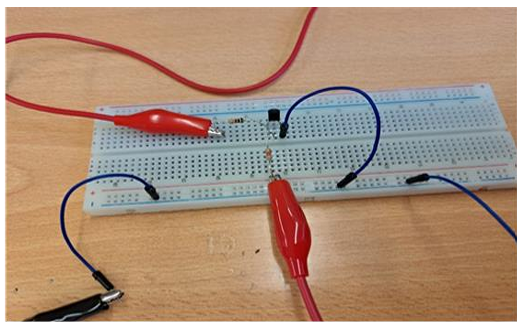
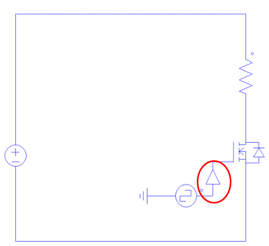
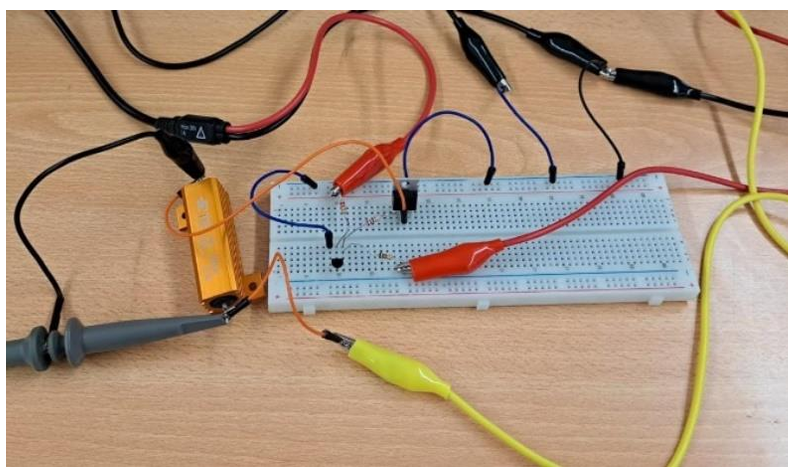
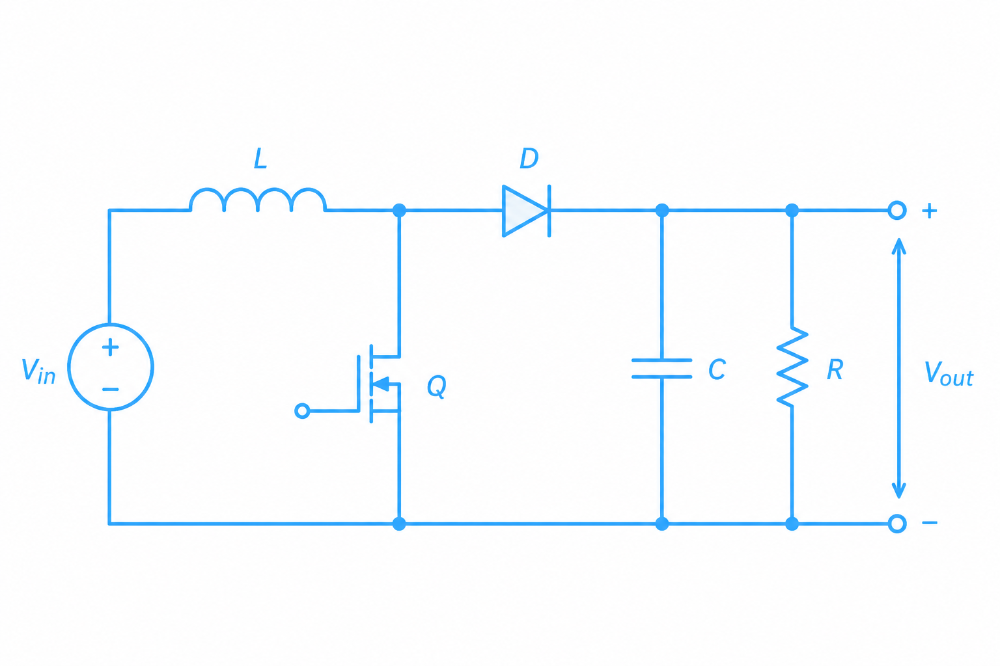
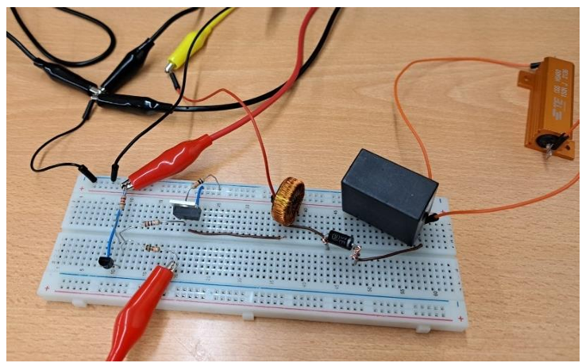
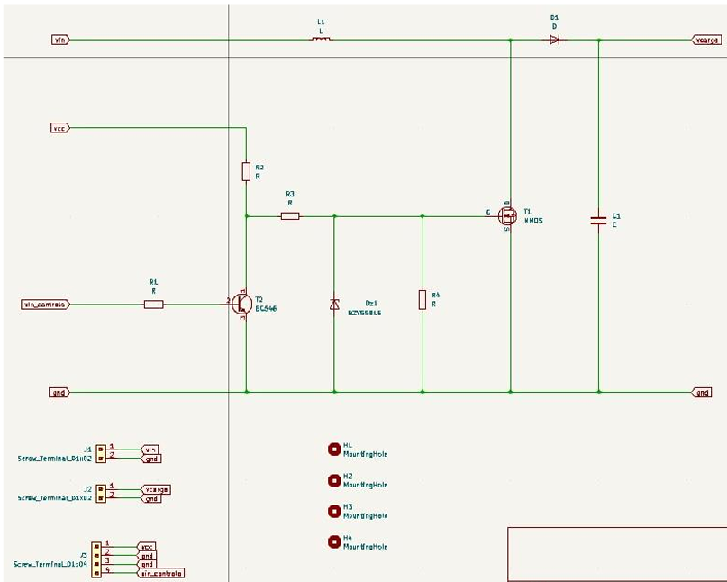
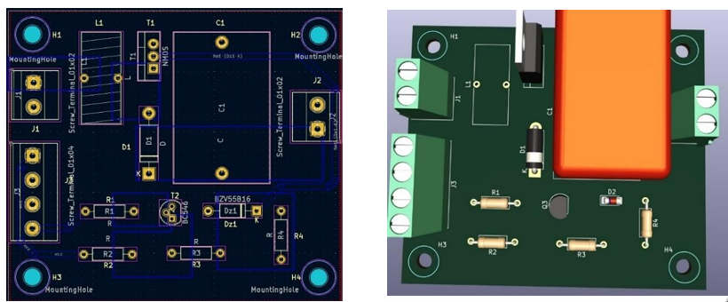
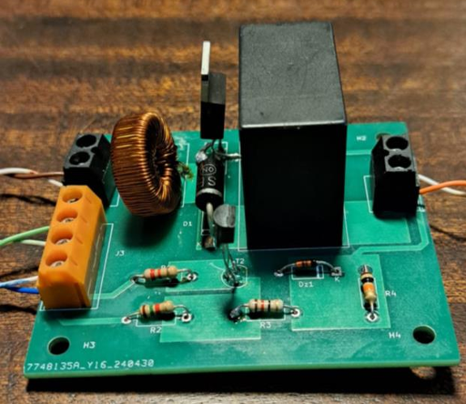

Imagens








Práticas Laboratoriais 3
Converter uma tensão contínua de entrada num valor de tensão contínua superior na saída.
Unidade curricular
Práticas Laboratoriais em EEIC 3
Ano
2.º ano, 2.º semestre · 2023/24
Equipa
3 elementos

A versão final do BOOST
O trabalho consistiu em estudar e implementar um conversor CC-CC Step-Up (Boost), que eleva uma tensão contínua de entrada para uma tensão de saída superior, através da comutação de um MOSFET. O projeto avançou em três fases e cada uma com 3 etapas:
O circuito de potência é composto por uma bobina, um MOSFET, um díodo e um condensador.
A bobina armazena energia quando o MOSFET está ligado, e liberta-a quando o MOSFET está desligado.
O díodo permite que a corrente circule para a carga quando o MOSFET está desligado, mas impede o seu retorno.
O condensador atenua a saída do conversor, fornecendo uma tensão contínua mais estável.
A relação entre a tensão de entrada, a de saída e o duty-cycle do sinal de comando é dada por:
O circuito de comando, montado com um transístor e duas resistências, converte o sinal de controlo numa onda adequada para acionar a gate do MOSFET.
Antes da montagem física, o circuito foi simulado em PSIM para observar tensões e correntes de entrada e saída, e antecipar o comportamento esperado em diferentes condições de frequência e duty-cycle.
Durante a montagem física, o circuito foi testado em breadboard, por partes, de modo a validar a montagem e retirar valores e conclusões sobre o seu funcionamento em diferentes condições de frequência e duty-cycle.
O esquemático e o desenho da placa foram feitos em KiCad, incluindo o layout dos componentes de potência (bobina, MOSFET, condensador) e de comando (resistências, transístor, díodo de zener), terminando com a soldadura e montagem da PCB final.
Na montagem final em PCB, com tensão de entrada de 15V e duty-cycle de 50%, obteve-se uma tensão de saída de aproximadamente 27V — próxima do valor teórico de 30V, com a diferença atribuída a perdas de energia nos componentes reais e a alguma tolerância no dimensionamento das resistências.
Confirmou-se ainda que, ao aumentar a tensão de entrada, a corrente da entrada diminui, e como se trata de um circuito step-up, a tensão de saída vai aumentar e a corrente diminuir. Este comportamento deve-se ao facto, de que a potência mantêm-se tanto na entrada como na saída.






